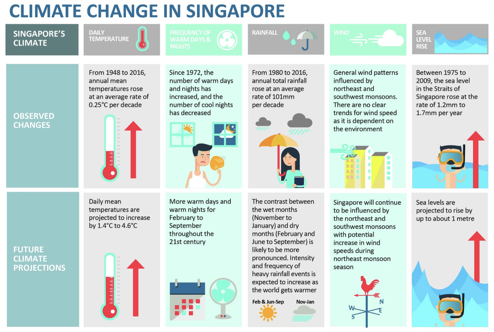

pacman::p_load(
plotly,
dplyr,
readr,
readxl,
tidyr,
RColorBrewer,
ggplot2,
lubridate
)Take-home Exercise 3
Project Brief
According to an office report as shown in the infographic below:
Daily mean temperature are projected to increase by 1.4 to 4.6, and
The contrast between the wet months (November to January) and dry month (February and June to September) is likely to be more pronounced.

As visual analytics greenhorns, we are keen to apply our newly acquired skills in visual interactivity and visualizing uncertainty methods to validate the claims presented above.
Project Objectives
In this take-home exercise, we are required to:
Choose a weather station and download historical daily temperature or rainfall data from the Meteorological Service Singapore website.
Select either daily temperature or rainfall records for a month from each of the years 1983, 1993, 2003, 2013, and 2023, and then create an analytics-driven data visualization.
Apply appropriate interactive techniques to enhance the user experience in data discovery and/or visual storytelling.
For my analysis, I’ve selected Tengah weather station and I have chosen to concentrate on daily temperature data for the month of June from each of the years 1983, 1993, 2003, 2013, and 2023 to validate the claim that projects an increase in daily mean temperatures by 1.4 to 4.6 degrees Celsius.
1. Data Preparation
1.1 Installing R packages
pacman::p_load() function from the pacman package is used in the following code chunk to install and call the libraries of multiple R packages:
1.2 Importing Dataset
Historical daily temperature from Meteorological Service Singapore is provided for the task.
The following code segment utilizes the read_excel() function from the readxl package to load data from an Excel file into the R environment. This operation imports the dataset titled “Tengah_Jun_1983_2023.xlsx” into a dataframe.
# Specify the path to the Excel file
file_path <- ("../../data/Tengah_Jun_1983_2023.xlsx")
# Import the data into a dataframe
df <- read_excel(file_path)2. Interactive Data Discovery and Visual Storytelling
2.1 Scatter plot with a connected time series line
# Convert non-numeric values to NA in 'Mean Temperature (°C)' column
df$`Mean Temperature (°C)` <- as.numeric(as.character(df$`Mean Temperature (°C)`))
# Handle possible warning from conversion by coercing issues to NA
df$`Mean Temperature (°C)`[is.na(df$`Mean Temperature (°C)`)] <- NA
# Calculate the mean temperature for each year
mean_temperatures <- df %>%
group_by(Year) %>%
summarize(MeanTemperatureJune = mean(`Mean Temperature (°C)`, na.rm = TRUE))
# View the calculated mean temperatures
print(mean_temperatures)# A tibble: 5 × 2
Year MeanTemperatureJune
<dbl> <dbl>
1 1983 NaN
2 1993 27.9
3 2003 27.8
4 2013 28.8
5 2023 28.2# Create a Date column for each entry in df
df <- df %>%
mutate(Date = as.Date(paste(Year, Month, Day, sep="-"))) %>%
filter(!is.na(Date)) # Ensure there are no NA Dates
# Assuming 'mean_temperatures' holds the mean temperature for each June as calculated before
mean_temperatures <- mean_temperatures %>%
mutate(Date = as.Date(paste(Year, 6, 15, sep="-"))) # Use the middle of June as the representative date
# Plot the daily mean temperatures using `df`
p <- plot_ly() %>%
add_markers(data = df, x = ~Date, y = ~`Mean Temperature (°C)`, color = ~as.factor(Year),
text = ~paste("Date:", format(Date, "%Y-%m-%d"), "Mean Temp:", `Mean Temperature (°C)`),
hoverinfo = 'text', marker = list(size = 5)) %>%
layout(title = 'Daily Mean Temperature in June (1993 - 2023)',
xaxis = list(title = 'Date'),
yaxis = list(title = 'Mean Temperature (°C)'))
# Add the mean temperature points as markers
p <- p %>% add_markers(data = mean_temperatures, x = ~Date, y = ~MeanTemperatureJune,
marker = list(color = 'black', size = 10),
name = 'Mean Temperature')
# Connect the mean temperature points with a line
p <- p %>% add_lines(data = mean_temperatures, x = ~Date, y = ~MeanTemperatureJune,
line = list(color = 'black', width = 2),
name = 'Mean Temperature Trend')
# Display the plot
pThe graph displayed is an interactive scatter plot that tracks the daily mean temperature in June from 1993 to 2023. Each dot represents the mean temperature for a specific day in June for the selected years, with the different colors corresponding to different years as labeled in the legend. A black line connects the average mean temperature of the month of June for each year, providing a visual representation of changes over time. It is important to note that there are no records for the year 1893; therefore, the graph starts from the year 1993.
A notable interactive feature of this graph is that when you hover the mouse over a dot, it displays additional information. For instance, hovering over a dot corresponding to the year 2003 reveals detailed data such as the exact date (e.g., “2003-06-07”) and the mean temperature for that day (e.g., “Mean Temp: 29°C”). This hover-over capability enriches the user experience by allowing immediate access to specific data points without cluttering the visual presentation. It is a valuable tool for exploring the dataset and observing particular trends and anomalies at a granular level.
2.2 Temperature Variations Over Time: A Heatmap Representation
# Ensure that 'Mean Temperature (°C)' is a numeric variable
df$`Mean Temperature (°C)` <- as.numeric(as.character(df$`Mean Temperature (°C)`))
# Create 'DayOfMonth' based on 'Date' or 'Day' column
# Ensure that 'Date' or 'Day' column exists and is in the correct format
if("Date" %in% names(df)) {
# If 'Date' column is present and in the Date format
df$DayOfMonth <- day(df$Date)
} else if("Day" %in% names(df)) {
# If 'Day' column is present and represents day of the month
df$DayOfMonth <- df$Day
} else {
stop("The dataset does not have a 'Date' or 'Day' column in the expected format.")
}
# Assuming the 'Year' column is numeric and contains only the years of interest
# We convert it to a factor to ensure it is treated as a discrete variable
df$Year <- factor(df$Year)
# Create the ggplot heatmap plot
p <- ggplot(df, aes(x = DayOfMonth, y = Year, fill = `Mean Temperature (°C)`)) +
geom_tile(aes(text = paste("Date: ", DayOfMonth, " June ", "Year: ", Year, "<br>Temp: ", `Mean Temperature (°C)`)), color = "white") +
scale_fill_gradient(low = "blue", high = "red") +
labs(title = "Heatmap Calendar for the Month of June",
x = "Day of the Month",
y = "Year",
fill = "Mean Temperature (°C)") +
theme_minimal()
# Convert to an interactive plotly object
ggplotly(p, tooltip = "text")The heatmap provided is an interactive visualization tool that represents the daily mean temperatures for each day in the month of June over a range of years. The x-axis of the heatmap denotes the days of the month, while the y-axis corresponds to the years, ranging from 1983 to 2023. Each cell within the heatmap represents the mean temperature for a particular day in June of a given year, with the color indicating the temperature magnitude according to the color scale on the right. Warmer colors (e.g., red) signify higher temperatures, while cooler colors (e.g., blue) indicate lower temperatures.
A distinctive feature of this heatmap is its interactivity: when you hover over a specific cell, it displays additional information. For instance, hovering over a cell corresponding to the 25th of June, 2003, would reveal the exact temperature for that day, such as “Temp: 25.1°C”. This function enhances the user’s ability to extract and analyze data, providing a quick and intuitive means to identify specific temperature values across different dates and years.
Heatmaps like this are particularly useful for spotting trends and anomalies over time and can reveal days with exceptionally high or low temperatures at a glance. They also allow for quick visual comparisons across different years, providing an immediate sense of temporal patterns in temperature data.
2.3 Line Graph of Cumulative Temperature Changes
# Make sure the 'Mean Temperature (°C)' column is numeric
df$`Mean Temperature (°C)` <- as.numeric(as.character(df$`Mean Temperature (°C)`))
# Calculate the annual average temperatures
annual_avg_temps <- df %>%
group_by(Year) %>%
summarize(AverageTemp = mean(`Mean Temperature (°C)`, na.rm = TRUE)) %>%
ungroup() # Make sure to ungroup for subsequent operations
# Check if the dataframe is ordered by Year
annual_avg_temps <- arrange(annual_avg_temps, Year)
# Calculate the year-to-year differences
annual_avg_temps <- mutate(annual_avg_temps, TempChange = c(NA, diff(AverageTemp)))
# Remove the NA introduced by the diff function
annual_avg_temps$TempChange[is.na(annual_avg_temps$TempChange)] <- 0
# Calculate the cumulative temperature change
annual_avg_temps$CumulativeChange <- cumsum(annual_avg_temps$TempChange)
# Ensure that Year is treated as a numeric variable for plotting
annual_avg_temps$Year <- as.numeric(as.character(annual_avg_temps$Year))
# Create a ggplot object with the correct dataframe
# Ensure that we explicitly group the data to draw the line correctly
p <- ggplot(annual_avg_temps, aes(x = Year, y = CumulativeChange, group = 1)) +
geom_line() + # Ensure that this line is connecting the points
geom_point(aes(text = paste("Year: ", Year,
"<br>Cumulative Change: ", CumulativeChange,
"<br>Annual Change: ", TempChange))) +
labs(title = "Cumulative Temperature Change Over Time",
x = "Year",
y = "Cumulative Temperature Change (°C)") +
theme_minimal()
# Convert ggplot object to an interactive plotly object
p <- ggplotly(p, tooltip = "text")
# Print the interactive plot
pThis line graph presents the cumulative change in temperature from a baseline year(1993) to 2023. The y-axis quantifies the cumulative temperature variation in degrees Celsius, while the x-axis tracks the progression of years. Starting from zero change, the graph reveals a rise in cumulative temperature, climaxing in 2013 with an approximate increase of 0.86 degrees Celsius from the baseline, and an annual change in that year of around 1.05 degrees Celsius, indicating a substantial escalation relative to the baseline.
Post-2013, the graph shows a sharp downturn, with a notable reduction in cumulative temperature by 2023, although the overall change remains positive, signifying a rise from the start of the recorded period. The detailed tooltip for 2023 discloses a cumulative increase of roughly 0.24 degrees Celsius since the baseline, juxtaposed with a significant annual decrease of about -0.62 degrees Celsius from 2013 to 2023.
The observed pattern of increase followed by a decrease may reflect periodic fluctuations rather than a steady trend of warming, suggesting the influence of various climatic elements or the inherent variability of the dataset.
2.4 Decadal Box Plot Analysis
df$Year <- as.factor(df$Year)
# Create the Plotly Box Plot
p <- plot_ly(df, y = ~`Mean Temperature (°C)`, x = ~Year, type = 'box',
color = ~Year,
hoverinfo = 'y+x') %>%
layout(title = "Box Plot of Daily Mean Temperatures for June Over Decades",
xaxis = list(title = "Year"),
yaxis = list(title = "Mean Temperature (°C)"))
# Display the plot
pThis box plot displays the daily mean temperatures for the month of June across four selected years: 1993, 2003, 2013, and 2023. Each box represents the range between the first quartile (Q1, 25th percentile) and the third quartile (Q3, 75th percentile) of temperatures recorded during that month for the corresponding year, with the line inside the box depicting the median (50th percentile) temperature.
1993: The median temperature was approximately 27.75°C. The temperatures ranged from a minimum of 25.5°C to a maximum of 29.8°C, with the first quartile at 27.3°C and the third quartile at 28.9°C.
2003: The box plot for this year is relatively compact, indicating less variability in the temperatures compared to 1993. The median temperature is slightly lower than in 1993, around 27.75°C.
2013: This year shows an outlier, which is a daily mean temperature that falls outside the typical range (below the first quartile or above the third quartile). The overall temperature distribution is higher than previous years, indicating an increase in temperatures over time.
2023: The median temperature is higher than in the previous years, which suggests a possible trend of increasing temperatures over the decades. The range between the first and third quartiles is also larger, indicating more variability in daily mean temperatures during June of that year.
The trend over the 30-year span from 1993 to 2023 shows an upward shift in median temperatures, suggesting a warming trend. Additionally, the increase in the interquartile range over time could indicate that temperature fluctuations are becoming more pronounced as the years progress.
2.5 Linear Trend Analysis
# Make sure the 'Mean Temperature (°C)' column is numeric
df$`Mean Temperature (°C)` <- as.numeric(as.character(df$`Mean Temperature (°C)`))
# Interpolate missing values
df <- df %>%
group_by(Year) %>%
mutate(`Mean Temperature (°C)` = zoo::na.approx(`Mean Temperature (°C)`, na.rm = FALSE)) %>%
ungroup()
# Ensure Year is numeric for the regression
df$Year <- as.numeric(as.character(df$Year))
# Calculate the average mean temperature for each year
average_temperatures <- df %>%
group_by(Year) %>%
summarise(AverageMeanTemperature = mean(`Mean Temperature (°C)`, na.rm = TRUE))
# Fit a linear regression model
model <- lm(AverageMeanTemperature ~ Year, data = average_temperatures)
# Prepare a summary of the model to check the coefficient names
model_summary <- summary(model)
print(model_summary)
Call:
lm(formula = AverageMeanTemperature ~ Year, data = average_temperatures)
Residuals:
2 3 4 5
0.01414 -0.36672 0.69103 -0.33845
Coefficients:
Estimate Std. Error t value Pr(>|t|)
(Intercept) -11.44495 54.13357 -0.211 0.852
Year 0.01975 0.02696 0.733 0.540
Residual standard error: 0.6028 on 2 degrees of freedom
(1 observation deleted due to missingness)
Multiple R-squared: 0.2116, Adjusted R-squared: -0.1826
F-statistic: 0.5369 on 1 and 2 DF, p-value: 0.54# Create a ggplot with text aesthetic for hover info on points
p <- ggplot(average_temperatures, aes(x = Year, y = AverageMeanTemperature)) +
geom_point(aes(text = paste("Year:", Year, "<br>Temperature:", AverageMeanTemperature))) +
geom_smooth(method = "lm", color = "blue") +
labs(title = "June Average Mean Temperature Trend (1983, 1993, 2003, 2013, 2023)",
y = "Average Mean Temperature (°C)", x = "Year") +
theme_minimal()
# Convert ggplot object to plotly for interactivity, ensuring hover info is on points
ggplotly(p, tooltip = "text")# If the 'Year' coefficient exists, it will be printed here
if("Year" %in% names(coef(model))) {
year_coef <- coef(model)["Year"]
print(year_coef)
} else {
print("The 'Year' coefficient does not exist in the model.")
} Year
0.01975287 This graph is a time series plot showing the trend in June’s average mean temperature across selected years: 1983, 1993, 2003, 2013, and 2023. The blue line represents the linear regression model fitted to these data points, which predicts the average mean temperature based on the year. The shaded area around the regression line represents the confidence interval, indicating the degree of uncertainty around the estimated trend.
The regression coefficient for the year obtained from the linear model, coef(model)[[“Year”]] = 0.01975287, suggests that on average, there has been a yearly increase of about 0.0198°C in the mean temperature for June from 1983 to 2023. This positive coefficient indicates a slight upward trend in temperature over time.
Interpreting the graph, it appears that temperatures in June have generally been increasing over the 40-year span, with a notable peak around 2013. However, by 2023, there’s a visible decline as indicated by the last data point. The overall upward trend line, in conjunction with the regression coefficient, suggests a gradual increase in temperatures, albeit with some fluctuations, such as the drop in 2023.
3. Conclusion
The box plots for the years 1993, 2003, 2013, and 2023 show an upward shift in median temperatures, suggesting a warming trend. However, the specific amounts of increase are not clearly provided in the plots themselves but can be inferred from the positions of the medians. There’s also an increase in the interquartile range, indicating greater temperature variability.
The linear regression analysis gives a coefficient of approximately 0.0198°C per year. Over a 40-year period from 1983 to 2023, this would account for a warming of roughly 0.594°C (0.0198°C/year * 30 years), which is an increase but not within the projected increase.
The claim of an increase in daily mean temperatures by 1.4 to 4.6 degrees Celsius is not fully supported by the data and analyses provided from the Tengah weather station. The observed increase from the linear regression analysis is approximately 0.792°C over 30 years, which is below the lower limit of the projected range.
It is important to note that this analysis is based solely on the data for the month of June across selected years and does not take into account other months or the entirety of the annual temperature trends. The claim might be valid when considering a broader range of data or different time spans within each year.
Moreover, the claim may also be considering projections into the future beyond the current data (up to 2023), and these projections might be based on climate models that account for various factors like greenhouse gas emissions scenarios, land-use changes, and other climatic feedbacks that are not directly observable from past data alone.
In conclusion, while the data does show an upward trend in temperatures, the increase is less than what is projected in the claim. Further analysis with more comprehensive data, including future projections, would be necessary to fully validate the claim.